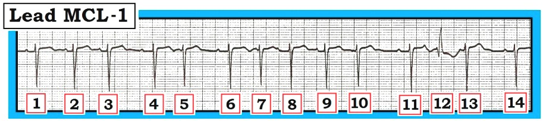
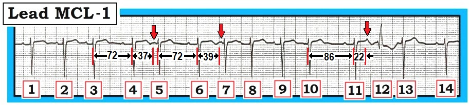
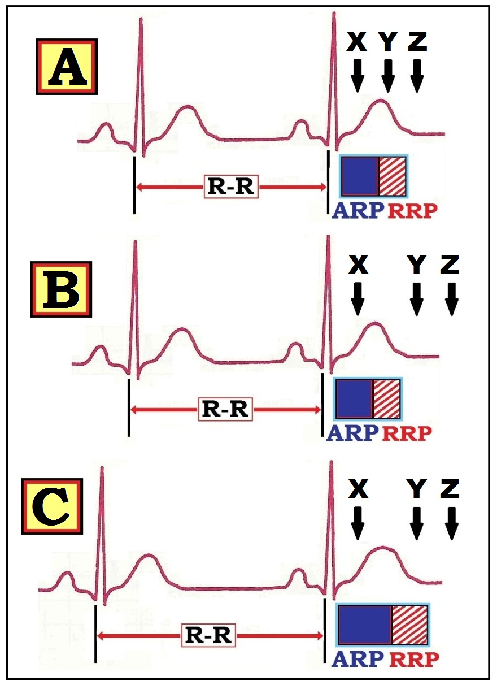
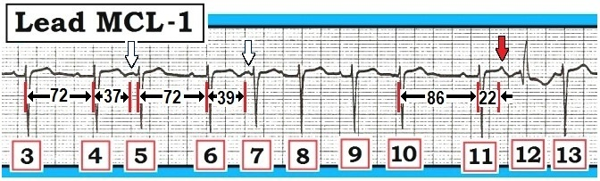

ECG Blog #70 (PVC – dẫn truyền lệch hướng – hiện tượng Ashman)
Hãy đọc dải nhịp chuyển đạo MCL-1 trong Hình 1.
- Nhịp nền là gì?
- Nhát giãn rộng số 12 là PVC hay PAC dẫn truyền lệch hướng? Bạn chắc chắn đến mức nào về câu trả lời của mình?
- Hiện tượng Ashman là gì?


Diễn giải Hình 1:
Nhịp nền có vẻ là nhịp xoang — dù phải thừa nhận là khó xác định tần số xoang nền vì bản ghi này liên tục không đều.
- Lý do chúng tôi cho rằng nhịp nền là nhịp xoang là hình dạng sóng P và khoảng PR giống nhau ở các nhát #4,6,11 và 14.
- Có nhiều PAC trên bản ghi này. Dù hình dạng sóng P dường như thay đổi nhẹ ở nhiều PAC trong số này — phải thừa nhận là khó chắc chắn liệu một số nhát đến sớm hơn dự kiến là PAC hay chỉ là sự không đều của nhịp do loạn nhịp xoang. Về lâm sàng — điều đó không quan trọng, vì “chủ đề” của nhịp này là nhịp xoang kèm nhiều PAC.
- Vượt ra ngoài phần cốt lõi: Về mặt kỹ thuật — chúng tôi không thể loại trừ khả năng đây là MAT. Chúng tôi thiên về chẩn đoán nhịp xoang kèm nhiều PAC vì hình dạng sóng P và khoảng PR giống nhau ở các nhát #4,6,11 và 14 (khác với hình dạng sóng P thay đổi liên tục từ nhát này sang nhát khác, điển hình cho MAT). Dù vậy — nhịp xoang kèm nhiều PAC và MAT về bản chất là hai điểm ở hai đầu của cùng một phổ. Trên thực tế, việc phân biệt 2 thực thể này không quan trọng — vì ý nghĩa lâm sàng của hai nhịp này hầu như giống nhau (Xem thêm ECG Blog #65).
- Nhát #12 — là một PAC dẫn truyền lệch hướng. Chúng tôi có thể tự tin đưa ra chẩn đoán này vì: i) Trước nhát #12 có một sóng P đến sớm (mũi tên trong Hình 2); ii) “Chủ đề” của nhịp này là nhịp xoang kèm nhiều PAC — nên nhiều khả năng nguyên nhân của nhát giãn rộng duy nhất trong Hình 1 cũng là một PAC; iii) Nhát #12 có hình dạng RBBB điển hình (rsR’ với tai thỏ bên phải cao hơn ở chuyển đạo bên phải MCL-1); và, iv) Nhát #12 biểu hiện hiện tượng Ashman.


HIỆN TƯỢNG Ashman:
Hiện tượng Ashman phản ánh ảnh hưởng của khoảng ghép ngoại vị và khoảng R-R đứng trước lên khả năng một PAC hoặc ngoại tâm thu bộ nối (PJC) được dẫn truyền lệch hướng. Nói đơn giản:
- “Nhát trông kỳ quặc nhất (tức là lệch hướng nhiều nhất) thì có khả năng cao nhất là đi sau khoảng ngưng dài nhất”. Cơ sở lý giải của hiện tượng Ashman được trình bày trong Hình 3:


- Ô A trong Hình 3 minh hoạ dạng sơ đồ rằng một xung động đến sớm (PAC hoặc PJC) xảy ra trong ARP (thời kỳ trơ tuyệt đối – Absolute Refractory Period — tương ứng với điểm X) sẽ bị blốc. Ngược lại — một PAC (hoặc PJC) xảy ra sau khi tái cực đã hoàn tất (tương ứng với điểm Z trong Ô A) sẽ được dẫn truyền bình thường. Dẫn truyền lệch hướng chỉ xảy ra NẾU một xung động đến sớm rơi vào RRP (thời kỳ trơ tương đối – Relative Refractory Period — tương ứng với điểm Y trong Ô A).
- Các sự kiện trong Ô B — gợi ý một tình huống lâm sàng khác. Một lần nữa — các điểm X, Y và Z biểu thị thời điểm giả định của 3 PAC. Xung động đến sớm X lại bị blốc (vì nó xảy ra trong ARP). Lần này — cả Y và Z đều rơi sau RRP, nên cả hai xung động đến sớm này sẽ được dẫn truyền bình thường xuống thất.
ĐIỂM MẤU CHỐT: Việc một xung động đến sớm có rơi vào trong RRP hay không (và được dẫn truyền lệch hướng) — còn được quyết định bởi độ dài của khoảng R-R ngay trước nhát bất thường (giãn rộng). Đó là vì thời gian của thời kỳ trơ tỷ lệ thuận với độ dài của khoảng R-R đứng trước. Khi tần số tim chậm lại (như trong Ô C của Hình 3) — cả ARP và RRP kế tiếp đều sẽ kéo dài.
- Ô C — cho thấy ảnh hưởng của việc tần số chậm lại lên sự dẫn truyền của 3 PAC từ Ô B. Xung động đến sớm X lại bị blốc (nó xảy ra trong ARP). Xung động đến sớm Z lại được dẫn truyền bình thường (nó xảy ra sau khi thời kỳ trơ đã kết thúc). Tuy nhiên, xung động Y đến sớm (vốn trong Ô B đã xảy ra sau khi tái cực hoàn tất) — giờ đây sẽ được dẫn truyền lệch hướng (vì khoảng R-R đứng trước dài hơn đã kéo dài RRP).
Tổng hợp về Hiện tượng Ashman
Cách chúng tôi thích nhất để ghi nhớ hiện tượng Ashman như sau:
- “Nhát trông kỳ quặc nhất (tức là lệch hướng nhiều nhất) thì có khả năng cao nhất là đi sau khoảng ngưng dài nhất”.
Nhát #12 minh hoạ hiện tượng Ashman như thế nào
Chúng tôi phóng to các sự kiện từ Hình 2 trong Hình 4 bên dưới. Lưu ý rằng “nhát kỳ quặc nhất” (nhát #12) đi sau khoảng ngưng dài nhất (khoảng R‑R giữa các nhát #10-11). Do đó — ngoài khoảng ghép rất ngắn 0.22 giây của PAC đứng trước nhát #12 (mũi tên đỏ) — khoảng R-R đứng trước tương đối dài hơn tạo điều kiện thuận lợi cho dẫn truyền lệch hướng (thông qua hiện tượng Ashman). So sánh trình tự chu kỳ ở các PAC khác trong Hình 4 (mũi tên trắng) thì kém thuận lợi hơn nhiều cho dẫn truyền lệch hướng.


ĐIỂM CUỐI CÙNG: Hiện tượng Ashman không hoàn toàn đáng tin cậy trong AFib
Vận dụng hiện tượng Ashman có thể cực kỳ hữu ích cho chẩn đoán khi đánh giá các nhát rộng trong rối loạn nhịp ghi được ở bệnh nhân đang có nhịp xoang.
- Cần biết rằng hiện tượng Ashman có giá trị không chắc chắn trong AFib (rung nhĩ – Atrial Fibrillation). Đó là vì độ dài khoảng R-R trong AFib liên tục bị chi phối bởi một hiện tượng khác gọi là dẫn truyền ẩn (concealed conduction), trong đó mức độ xâm nhập thay đổi của 400 đến 600 xung động nhĩ đến nút AV mỗi phút trong AFib ảnh hưởng đến dẫn truyền theo cách khiến khoảng R-R đứng trước không còn phản ánh chính xác thời gian của thời kỳ trơ kế tiếp (Marriott và Conover).
- Xin xem ECG Blog #71 của chúng tôi — trong đó chúng tôi tìm hiểu sâu hơn vì sao hiện tượng Ashman không có giá trị chẩn đoán trong bối cảnh AFib.
================================
- Để biết thêm thông tin — XEM:
- Xem Mục 19.0 (từ ACLS-2013-ePub) — về Dẫn truyền lệch hướng –